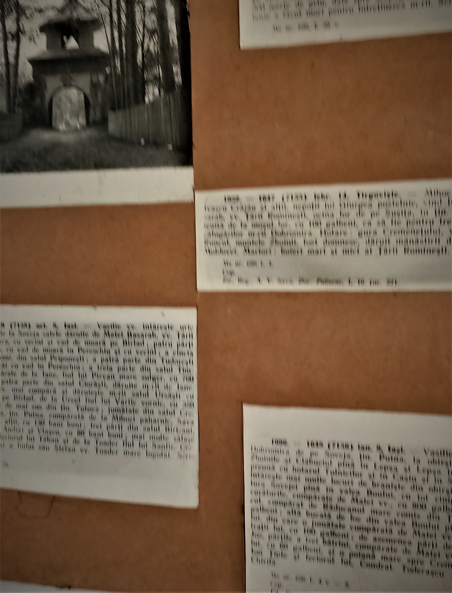
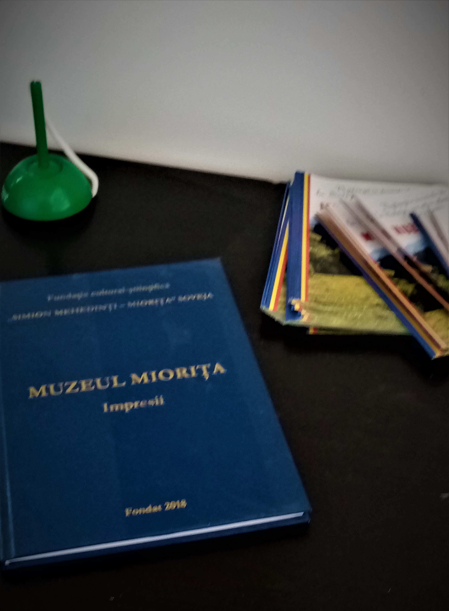
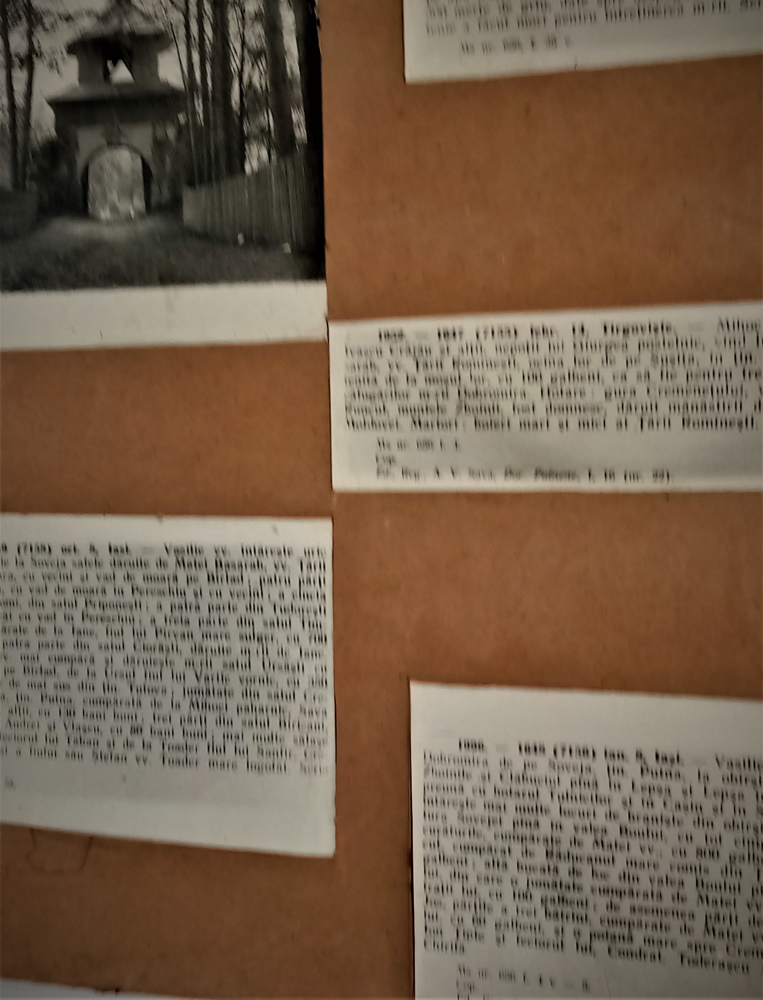
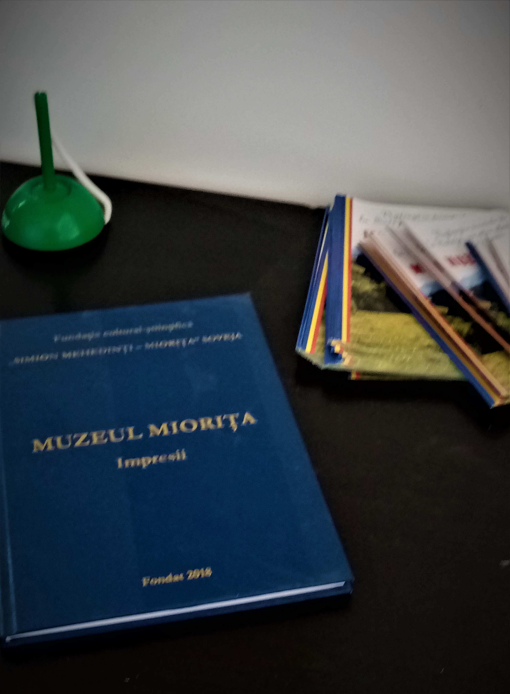

Cunoaște tradițiile noastre, descoperă istoria!
Avem ca scop principal cunoasterea și promovarea valorilor culturii populare din Soveja, cuibul capodoperei MIORITA.

Avem ca scop principal cunoasterea și promovarea valorilor culturii populare din Soveja, cuibul capodoperei MIORITA.
Cum la Soveja a fost descoperita MIORITA, în martie, 2011, la împlinirea a 165 de ani de la descoperirea MIORITEI, fundatia a organizat al doilea Simpozion MIORITA, înfiintand și MUZEUL MIORITA - unic în tara.
Despre noi →MUZEUL MIORITA, este amenajat în o anexa a scolii ,,Simion Mehedinti" SOVEJA, la etaj, spatiu impropriu, insuficient.
Are drept scop neuitarea baladei, promovarea acesteia, prin lucrari, pliante, carti etc.
Constientizarea valorii MIORITEI, prin actiuni de cunoastere, de cercetare, de promovare
Muzeul Miorita Soveja este un loc unic în care puteți descoperi istoria și tradițiile regiunii Vrancea prin expoziții interactive și obiecte autentice. De asemenea, oferim programe educative și evenimente culturale pentru a promova patrimoniul cultural al zonei.
Descoperă și discută despre tradițiile și povestirile populare despre Miorița. Fii parte din comunitatea noastră și participă la dezbateri interesante despre cultura locală și Muzeul Miorita Soveja.

 





Muzeul Miorita Soveja este o organizație dedicată promovării culturii și tradițiilor Mioriței.
Spre Galerie →